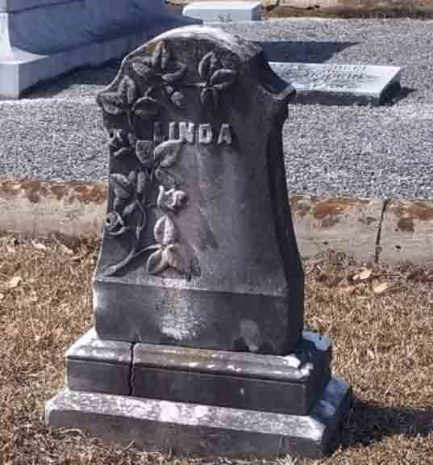
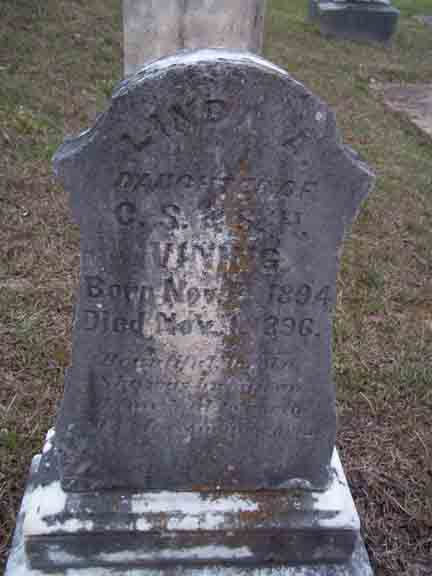

Census Data
| 1900 | 1910 | 1920 | 1930 | 1940 | |
| Charles Stewart Vining | 31 | 42 | 50 | 61 | 71 |
| Sara Harriet (Smith) Vining | 30 | 42 | 49 | 60 | 70 |
| Frankie Dye Vining | 8 | 17 | [living? in separate household] | ||
| Linda Allen Vining | ? | 15 | [living? in separate household] | ||
| Mamie Viola Vining | 5 | 14 | [living? in separate household] | ||
| Winnie Davis Vining | 2 | 11 | [living? in separate household] | ||
| Marion Elizabeth Vining | 9 | 19 | [living? in separate household] | ||
| Charles Allen Vining | 5 | 15 | [married and?] living in separate household | ||
| Francis Joseph Vining | 3 | 12 | [married and?] living in separate household | ||
| James Anthony Vining | 1 | 10 | 20 | [married and?] living in separate household | |
| Hull Smith Vining | 7 | [married and?] living in separate household | |||
| Sarah Harriet Vining | 5 | 15 | [married and?] living in separate household |


Death Data
Gravestone (front and back) for Linda Allen Vining, daughter of Charles Stewart Vining and Sara Harriet (Smith) Vining, in Glenwood Cemetery, Thomaston, Upson County, Georgia (from Find A Grave):
